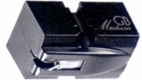
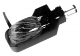
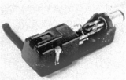

GOLDBUG（ゴールドバク）
MCカートリッジ専業だったブランド。パイプ素材であるブライヤーをボディ素材としたMr.Brierで有名。1970年代後半に登場したが、1987年頃には販売機種をMr.Brier一機種に縮小し、1980年代末には姿を消した。なおMr.Brierのボディを作成したのは、当時、日本で唯一の女流パイプ作家との説明があった菅野祥子氏だそうだ。
なお、小さなメーかーゆえか、販売元は転々とし、当初は�潟oブコ、1981年頃は�潟oエス、1983年頃は�潟Gム・アンド・エー、1984年頃は�潟Gレクトリ。
�T.カートリッジ


(Mr.Brier)
(Clement�U)